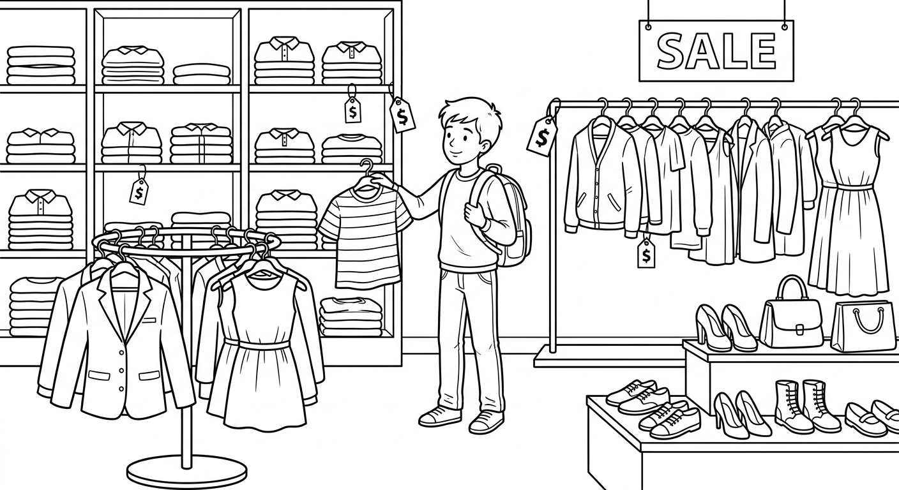
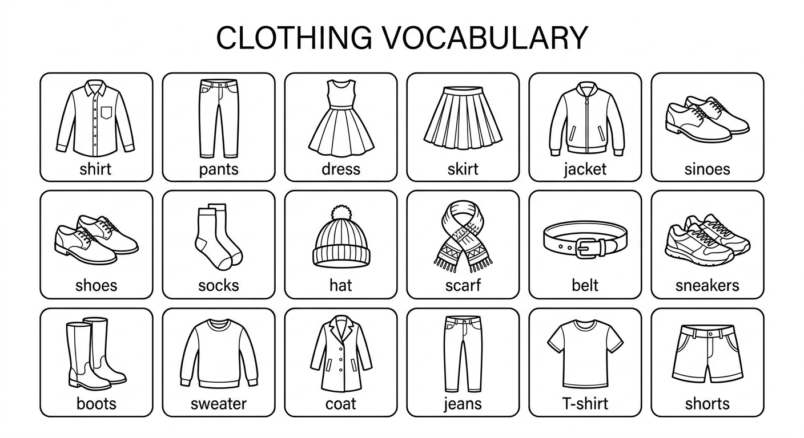
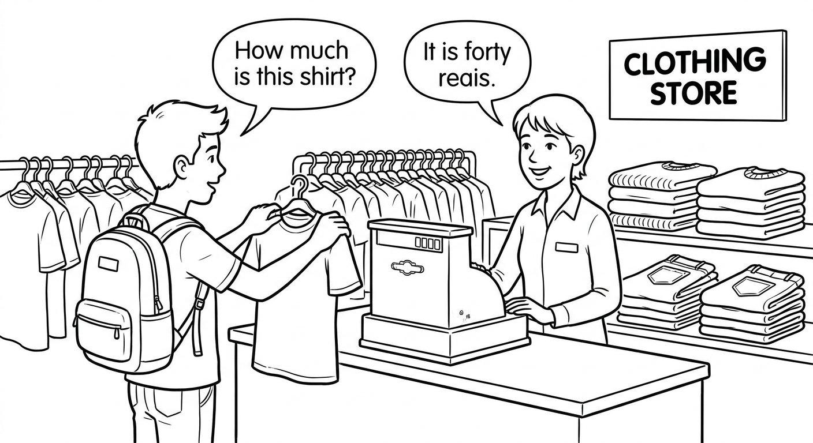
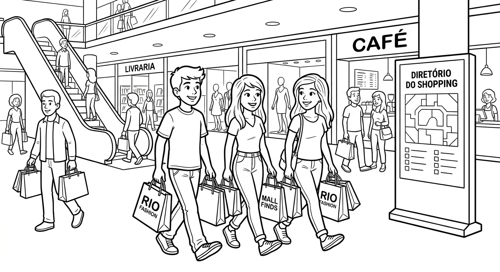
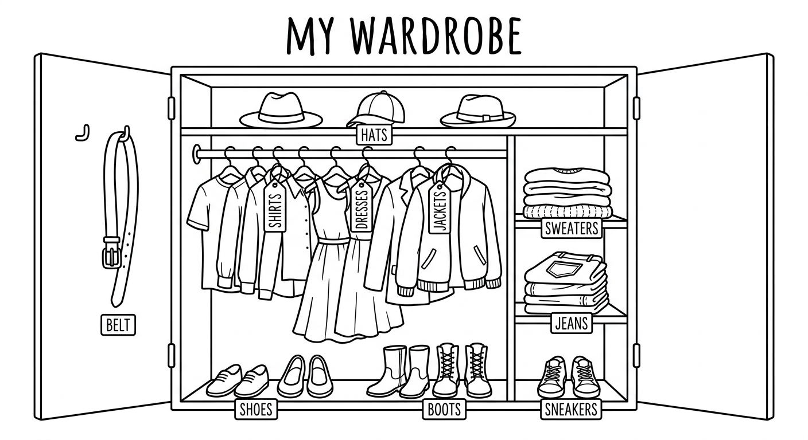

Quantifiers: much, many, a lot of, a few, a little, some, any, no
In this chapter you will learn how to use quantifiers to talk about amounts and quantities. You will practise using much, many, a lot of, a few, a little, some, any, and no in the context of clothes and shopping. By the end, you will be able to describe what you have, what you need, and what you want to buy.

Quantifiers with Countable and Uncountable Nouns
Some quantifiers are used only with countable nouns (things you can count: one shirt, two shirts). Others are used only with uncountable nouns (things you cannot count: money, information, cotton). Some work with both.
| Quantifier | Countable | Uncountable | Example |
|---|---|---|---|
| many | Yes | No | How many shirts do you have? |
| a few | Yes | No | I have a few dresses. |
| few | Yes | No | There are few jackets left. |
| much | No | Yes | How much money do you have? |
| a little | No | Yes | I have a little money left. |
| little | No | Yes | There is little fabric in this colour. |
| a lot of | Yes | Yes | She has a lot of shoes. / He spent a lot of money. |
| some | Yes | Yes | I bought some socks. / I need some help. |
| any | Yes | Yes | Are there any boots? / Is there any cotton? |
| no | Yes | Yes | There are no belts. / There is no space. |
Where you use each quantifier depends on whether the sentence is affirmative (+), negative (-), or a question (?).
| Sentence Type | Preferred Quantifiers | Example |
|---|---|---|
| Affirmative (+) | some, a lot of, a few, a little | I have some new shirts. |
| Negative (-) | any, much, many, no | I don't have any clean socks. |
| Question (?) | any, much, many, some (offers/requests) | Do you have any jeans? |
Important: We use some in questions when we are offering something or making a request:
- Would you like some help? (offer)
- Can I have some water, please? (request)
Important: Much and many are mainly used in questions and negatives. In affirmative sentences, we usually prefer a lot of:
- She has a lot of clothes. (more natural than "She has many clothes.")
- He spent a lot of money. (more natural than "He spent much money.")
Clothes Vocabulary
| Clothing Item | Português | Example Sentence |
|---|---|---|
| shirt | camisa / camiseta | He bought a new shirt for the party. |
| pants / trousers | calça | These pants are too long for me. |
| dress | vestido | She wore a beautiful dress to the wedding. |
| skirt | saia | The school uniform includes a blue skirt. |
| jacket | jaqueta | Take your jacket — it's cold outside. |
| shoes | sapatos | I need new shoes for school. |
| socks | meias | I can never find matching socks! |
| hat | chapéu / boné | He always wears a hat when it's sunny. |
| scarf | cachecol / lenço | She wrapped a warm scarf around her neck. |
| belt | cinto | His belt matches his shoes. |
| boots | botas | These boots are perfect for rainy days. |
| sweater | suéter / blusa de frio | Put on a sweater — it's getting cold. |
| coat | casaco | She wore a long coat to the cinema. |
| jeans | jeans / calça jeans | Jeans are the most popular type of trousers. |
| sneakers / trainers | tênis | She bought some white sneakers for PE class. |
| T-shirt | camiseta | He wears a different T-shirt every day. |
| shorts | shorts / bermuda | In summer, everyone wears shorts. |

Examples in Context
How many shirts did you buy at the shopping centre?
Quantas camisas você comprou no shopping?
I don't have much money to spend on clothes this month.
Eu não tenho muito dinheiro para gastar com roupas este mês.
Larissa has a lot of shoes in her closet.
Larissa tem muitos sapatos no armário dela.
I still have a few clean T-shirts for the week.
Eu ainda tenho algumas camisetas limpas para a semana.
There is a little space left in this drawer for your socks.
Há um pouco de espaço nesta gaveta para suas meias.
I need to buy some new jeans for school.
Eu preciso comprar algumas calças jeans novas para a escola.
We don't have any winter coats on sale right now.
Nós não temos nenhum casaco de inverno em promoção agora.
There are no black belts in this store.
Não há cintos pretos nesta loja.
Be careful with the difference between a few / a little and few / little:
- a few = some, a small number (positive meaning) — I have a few friends who like shopping. (= I have some friends, that's good!)
- few = not many, not enough (negative meaning) — I have few friends who like shopping. (= I don't have enough friends for that, it's a problem.)
- a little = some, a small amount (positive meaning) — I have a little money. (= I have some money, enough for something.)
- little = not much, not enough (negative meaning) — I have little money. (= I almost have no money, it's not enough.)
In Portuguese, this difference does not exist in the same way. Poucos amigos can mean both "a few friends" and "few friends". In English, the article a makes a big difference!
Suggested time: 30 minutes
Warm-up: Ask students to name as many clothing items as they can in English. Write them on the board and classify them as countable or uncountable (most clothing items are countable, but point out uncountable related words like money, cotton, fabric, clothing).
L1 interference: Portuguese speakers tend to use muito/muita for both much and many. Emphasise that English requires them to choose based on countable/uncountable. Also, some and any do not have direct equivalents in Portuguese — students may overuse some in negatives or forget any in questions.
Activity: Before exercises, have students sort the vocabulary items into "countable" and "uncountable" columns on the board. Most clothing items are countable, but discuss related uncountable nouns (money, fabric, cotton, leather, clothing).
Fill in each blank with much, many, or a lot of. Sometimes more than one answer is possible.
Select the correct option to complete each sentence.
I don't have ______ warm clothes for winter.
b) manyThere is ______ cotton in this shirt — it feels very soft.
a) a lot ofHow ______ pairs of jeans does Mateus own?
c) manyShe only has ______ patience left — she has been trying on clothes for two hours!
b) a littleCarolina bought ______ accessories at the market — earrings, bracelets, and a hat.
b) a lot ofsome, any, no, a few, a little in Context
Let's look more closely at how some, any, and no are used in different types of sentences:
| Quantifier | Used in | Example | Português |
|---|---|---|---|
| some | Affirmative sentences | I bought some new socks. | Eu comprei algumas meias novas. |
| Offers & requests | Would you like some help? | Você gostaria de ajuda? | |
| any | Negative sentences | I don't have any clean shirts. | Eu não tenho nenhuma camisa limpa. |
| Questions | Do you have any scarves? | Você tem algum cachecol? | |
| no | Affirmative verb + no | There are no boots in my size. | Não há botas no meu tamanho. |
Key point: When we use no, the verb is affirmative (NOT negative). Compare:
- There are no jackets. (correct — affirmative verb + no)
- There aren't any jackets. (correct — negative verb + any)
- There aren't no jackets. (WRONG — double negative!)
Shopping Examples
I'd like to try on some dresses, please.
Eu gostaria de experimentar alguns vestidos, por favor.
Do you have any of these sneakers in size 38?
Vocês têm algum desses tênis no tamanho 38?
Sorry, we don't have any in that size.
Desculpe, não temos nenhum nesse tamanho.
There are no changing rooms available right now.
Não há provadores disponíveis agora.
We have a few shirts on sale in the back of the store.
Temos algumas camisas em promoção no fundo da loja.
Can you give me a little time to decide?
Pode me dar um pouco de tempo para decidir?

Dialogue: Shopping for Clothes
"no" = "not ... any". These two sentences mean exactly the same thing:
- There are no shoes in my size.
- There aren't any shoes in my size.
Both are correct. With no, the verb is affirmative. With any, the verb is negative.
In Portuguese, both translate to: Não há sapatos no meu tamanho.
Suggested time: 30 minutes
Dialogue activity: Have students read the dialogue in pairs (Isabela and Shop assistant). Then swap roles. After reading, ask comprehension questions: "Does the store have any white T-shirts in size M?" "How many T-shirts does Isabela buy?" "Why does she want to pay by card?"
Highlight exercise: Ask students to underline all quantifiers in the dialogue and classify them as "countable", "uncountable", or "both". This reinforces Unit 4.1 rules.
Extension: Students can create their own shopping dialogue using the vocabulary and quantifiers from this chapter.
Fill in each blank with some, any, no, a few, or a little.
Rewrite each sentence using the quantifier in brackets. The meaning should stay the same (or very similar).
There aren't any blue shirts in this store. (Use "no")
There are no blue shirts in this store.There is no milk in the fridge. (Use "any")
There isn't any milk in the fridge.He has a lot of hats. (Use "many")
He has many hats.There are no clean socks in the drawer. (Use "any")
There aren't any clean socks in the drawer.She doesn't have any belts. (Use "no")
She has no belts.We don't have any money left. (Use "no")
We have no money left.There are no scarves on sale. (Use "any")
There aren't any scarves on sale.Pedro doesn't have any sneakers for the gym. (Use "no")
Pedro has no sneakers for the gym.Reading — Shopping Day
Last Saturday, Camila went to Shopping Metrô Itaquera with her friends Lucas and Amanda. They needed to buy some new clothes for the new school term. Camila's mother gave her some money — two hundred reais — and told her: "Buy only what you need. Don't spend too much!"
When they arrived at the mall, there were a lot of people everywhere. It was the beginning of the school year, so many families were doing the same thing. The first store they visited was a big clothing chain. Lucas needed many things — he didn't have any new shirts and his old sneakers had a lot of holes in them. He found a few nice shirts on sale and bought three for ninety reais. He also found some comfortable sneakers for one hundred and twenty reais.
Amanda didn't need many clothes. She only needed a few pairs of socks and a new belt. She found some pretty socks with colourful patterns and a simple brown belt. She spent little money — only forty-five reais in total. She was very happy because she still had a lot of money left for other things.
Camila wanted to buy some jeans and a jacket. She tried on many pairs of jeans, but there weren't any in her size that she liked. The shop assistant said: "We don't have much variety in size P right now, but we will have some new stock next week." Camila was disappointed, but she found a beautiful denim jacket for eighty-nine ninety-nine. She also bought a few T-shirts — two white ones and a black one — for thirty reais each.
After shopping, they went to the food court. They didn't have much time because Camila's mother was picking them up at five o'clock. Lucas had no money left for food, so Amanda and Camila shared some snacks with him. They each had some açaí and a few pieces of pão de queijo. It was a fun day, even though Lucas had no change left in his pocket!

Suggested time: 25 minutes (reading + exercises 5-6)
Pre-reading: Ask students where they buy their school clothes. Do they go to a shopping centre, a street market, or buy online? Have they ever shopped with friends?
Reading strategy: First reading for general understanding. On the second reading, ask students to underline every quantifier they find in the text (much, many, a lot of, a few, a little, some, any, no, few, little). Count how many of each quantifier appear. This helps reinforce recognition.
Cultural note: Shopping Metrô Itaquera is a well-known shopping centre in the eastern zone of São Paulo. Many students may recognise it. You can ask if they have been there or to a similar mall.
Read the text above and write T (True) or F (False).
Answer the questions in complete sentences based on the text.
How much money did Camila's mother give her?
Camila's mother gave her two hundred reais. / She gave her some money — two hundred reais.Why were there a lot of people at the mall?
Because it was the beginning of the school year, so many families were shopping for school clothes.Why couldn't Camila buy any jeans?
Because there weren't any jeans in her size that she liked. / The store didn't have much variety in size P.What did the three friends eat at the food court?
They had some açaí and a few pieces of pão de queijo.Writing Task

Write a short paragraph (8-10 sentences) describing what clothes you have in your closet. Use at least 6 different quantifiers from this chapter (much, many, a lot of, a few, a little, some, any, no, few, little).
Include:
- What clothes you have a lot of
- What clothes you have a few of
- What clothes you don't have any of (or have no...)
- What clothes you need to buy
- How much money you need for new clothes
Use the vocabulary table from Unit 4.1 and the reading text from Unit 4.3 as models. Remember:
- Use many / a few / few with countable nouns (shirts, shoes, pants).
- Use much / a little / little with uncountable nouns (money, space, time).
- Use a lot of / some / any / no with both.
- Use some in affirmative sentences and any in negatives and questions.
Example start: "In my closet, I have a lot of T-shirts because I wear them every day. I have a few pairs of jeans, but I don't have any shorts. I need to buy some..."
Suggested time: 20 minutes
Assessment criteria for Exercise 7:
- At least 6 different quantifiers used correctly
- Correct distinction between countable and uncountable nouns
- Correct use of some in affirmative and any in negatives/questions
- Clothing vocabulary from the chapter is used
- Clear paragraph structure (8-10 sentences)
Extension activity: After writing, students can share their paragraphs in pairs. The partner reads and identifies all the quantifiers used. Then they ask follow-up questions: "How many T-shirts do you have?" "Do you have any boots?" This combines reading, writing, and speaking practice.
Differentiation: For weaker students, provide sentence starters on the board: "I have a lot of...", "I don't have any...", "I have a few...", "There is no... in my closet.", "I need some..."
Chapter 4 - Answer Key
Exercise 1: Complete with much, many, or a lot of
Exercise 2: Choose the Correct Quantifier
Exercise 3: Complete with some, any, no, a few, or a little
Exercise 4: Rewrite the Sentence Using a Different Quantifier
Exercise 5: True or False
Exercise 6: Answer the Questions
Exercise 7: Describe Your Closet
Answers will vary. Check for correct use of at least 6 different quantifiers, correct countable/uncountable noun agreement, correct some/any/no patterns, use of clothing vocabulary, and clear paragraph structure (8-10 sentences).